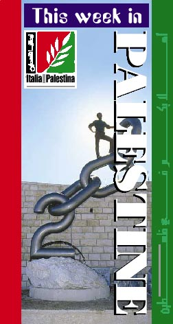

Back to Calender's main page
Jerusalem Hotel Calender Cultural Events
|
 |
____________________________________________________________________________
Back to top
Friday 01 September 19:30 Play:Ramzi abu al-Majd,Al Kasaba Theatre
and Cinematheque.
Saturday 02 September 18:00 Exhibition: landscape photos by Christa
Lad'a,Khalil Sakakini Cultural
Center.Exhibition open daily from 15:00 -19:00
until 12 September.
Saturday 02 September 18:30
Film:Analyze This (Dir.Harold Ramis,USA
2000),Popular Art Center.
Saturday 02 September 19:30
Play:Ramzi abu al-Majd,Al Kasaba Theatre
and Cinematheque.
Saturday 02 September 19:30 Film:The
Mask of Zorro (Dir.Martin
Cambell,USA 1998), Al Kasaba Theatre and
Cinematheque.
Saturday 02 September 20:30
Film:White Man's Burden (Dir.Desmond
Nakano,USA 1995),Popular Art Center.
Sunday 03 September 16:30 Film:Star
Wars: The Phantom Menace
(Dir.George Lucas,USA 1999),Popular Art
Center.
Sunday 03 September 19:30 Play:Ramzi
abu al-Majd,Al Kasaba Theatre
and Cinematheque.
Sunday 03 September 19:30
Film:Gandhi (Dir.Richard Attenborough,India
1982),Popular Art Center.
Sunday 03 September 19:30 Film:The
Mask of Zorro (Dir.Martin
Cambell,USA 1998),Al Kasaba Theatre and
Cinematheque.
Monday 04 September 18:30 Film:Austin Powers I (Dir.Jay Roach,UK
1997),Popular Art Center.
Monday 04 September 20:30 Film:The
Blair Witch Project (Dir.Daniel
Myrick and Eduardo Sanchez,USA 1999),Popular
Art Center.
Tuesday 05 September 18:30
Film:Notting Hill (Dir.Roger Michell,UK
2000),Popular Art Center.
Tuesday 05 September 19:30 Film:As
Good as it gets (dir.James
Brooks,USA 1997),Al Kasaba Theatre and
Cinematheque.
Tuesday 05 September 20:30
Film:Carla's Song (Dir.Ken Loach,Scotland
1996,English/ Spanish),Popular Art Center.
Wednesday 06 September 18:30 Film:
American Pie (Dir.Paul Weitz,USA
2000), Popular Art Center.
Wednesday 06 September 19:00
Concert:Il Rombo Magico (Jazz and blues
Italian music group),Khalil Sakakini
Cultural Center.
Wednesday 06 September 19:30 Film:As
Good as it gets (dir.James
Brooks,USA 1997), Al Kasaba Theatre and
Cinematheque.
Wednesday 06 September 20:30 Film:W
Phen we were Kings (Dir.Leon
Gast,USA 1996),popular Art Center.
Thursday 07 September 18:00
Children's play:Nakhleh ash Shiber,Khalil
Sakakini Cultural Center.
Thursday 07 September 18:30 Film:White
Man's Burden (Dir.Desmond
Nakano,USA 1995),Popular Art Center.
Thursday 07 September 20:30
Film:Analyze This (Dir.Harold Ramis,USA
2000),Popular Art Center.
Friday 08 September 19:30 Play:The
Immigrant,Al Kasaba Theatre and
Cinematheque.
Film Noir week at the Sakakini Cultural
Center, 09 and 13 September.
Saturday 09 September 18:30 Film:The Blair Witch Project (Dir.Daniel
Myrick and Eduardo Sanchez,USA 1999),Popular
Art Center.
Saturday 09 September 19:30 Film:Touch
Evil (dir.Orson Wells,1946,1hr
48 min,b&w), Khalil Sakakini Cultural
Center.
Saturday 09 September 19:30 Film:Stepmom
(Dir.Ray Kluga,USA 1998),Al
Kasaba Theatre and Cinematheque.
Saturday 09 September 19:30
Concert:popular singing with Rababa of he
story of Az Zeir Salem,Al Kasaba Theatre
and Cinematheque.
Saturday 09 September 20:30
Film:Austin Powers I (Dir.Jay Roach,UK
1997),Popular Art Center.
Sunday 10 September 16:30 Film:Star
Wars: The Phantom Menace
(Dir.George Lucas,USA 1999),Popular Art
Center.
Sunday 10 September 19:30
Film:Stepmom (Dir.Ray Kluga,USA 1998),Al
Kasaba Theatre and Cinematheque.
Sunday 10 September 19:30 Film:Gandhi
(Dir.Richard Attenborough,India
1982),Popular Art Center.
Monday 11 September 18:30
Film:Carla's Song (Dir.Ken Loach,Scotland
1996,English/ Spanish),Popular Art Center.
Monday 11 September 19:30
Film:Double Indemnity (dir.Billy
Wilder,1944,1 hr 47 min., b&w),Khalil
Sakakini Cultural Center.
Monday 11 September 20:30 Film:Notting
Hill (Dir.Roger Michell,UK
2000),Popular Art Center.
Tuesday 12 September 18:30 Film:When
we were Kings (Dir.Leon
Gast,USA 1996),Popular Art Center.
Tuesday 12 September 19:30 Film:Stepmom
(Dir.Ray Kluga,USA 1998),Al
Kasaba Theatre and Cinematheque.
Tuesday 12 September 20:30 Film:American
Pie (Dir.Paul Weitz,USA
2000),Popular Art Center.
Wednesday 13 September 18:30 Film:
Analyze This (Dir.Harold
Ramis,USA 2000), Popular Art Center.
Wednesday 13 September 19:30 Film:The
Postman always rings Twice
(1958,109 min., b&w),Khalil Sakakini
Cultural Center.
Wednesday 13 September 19:30 Film:
Stepmom (Dir.Ray Kluga,USA
1998),Al Kasaba Theatre and Cinematheque.
Wednesday 13 September 20:30
Film:White Man's Burden (Dir.Desmond
Nakano,USA 1995),Popular Art Center.
Thursday 14 September 18:30
Film:Austin Powers I (Dir.Jay Roach,UK
1997),Popular Art Center.
Thursday 14 September 20:00 Dance
performane:Al Birjawi (Sariyyet
Ramallah dance group),Al Kasaba Theatre and
Cinematheque.
Thursday 14 September 20:30 Film:The
Blair Witch Project (Dir.Daniel
Myrick and Eduardo Sanchez,USA 1999),Popular
Art Center.
Friday 15 September 20:00 Dance
performane:Al Birjawi (Sariyyet
Ramallah dance group),Al Kasaba Theatre and
Cinematheque.
Saturday 16 September 18:30 Film:Notting
Hill (Dir.Roger Michell,UK
2000),Popular Art Center.
Saturday 16 September 19:30 Play:Abu
Marmar,Al Kasaba Theatre and
Cinematheque.
Saturday 16 September 20:30 Film:Carla's
Song (Dir.Ken Loach,Scotland
1996,English/ Spanish),Popular Art Center.
Sunday 17 September 16:30 Film:Star
Wars: The Phantom Menace
(Dir.George Lucas,USA 1999),Popular Art
Center.
Sunday 17 September 19:30 Play:Abu
Marmar,Al Kasaba Theatre and
Cinematheque.
Sunday 17 September 19:30 Film:Gandhi
(Dir.Richard Attenborough,India
1982),Popular Art Center.
Monday 18 September 18:30
Film:American Pie (Dir.Paul Weitz,USA
2000),Popular Art Center.
Monday 18 September 20:30 Film:When
we were Kings (Dir.Leon
Gast,USA 1996),Popular Art Center.
Tuesday 19 September 19:30 Film:Joan
of Arc (dir.Luc Besson and
Thierry Arbogast,USA 1999),Al Kasaba
Theatre and Cinematheque.
Tuesday 19 September 18:30 Film:White
Man's Burden (Dir.Desmond
Nakano,USA 1995),Popular Art Center.
Tuesday 19 September 20:30
Film:Analyze This (Dir.Harold Ramis,USA
2000),Popular Art Center.
Wednesday 20 September 18:30
Film:The Blair Witch Project (Dir.Daniel
Myrick and Eduardo Sanchez,USA 1999),Popular
Art Center.
Wednesday 20 September 19:30 Film:Joan
of Arc (dir.Luc Besson and
Thierry Arbogast, USA 1999),Al Kasaba
Theatre and Cinematheque.
Thursday 21 September 18:30
Film:Carla's Song (Dir.Ken Loach,Scotland
1996,English/ Spanish),Popular Art Center.
Thursday 21 September 19:30 Film:Joan
of Arc (dir.Luc Besson and
Thierry Arbogast,USA 1999),Al Kasaba
Theatre and Cinematheque.
Thursday 21 September 20:30 Film:Notting
Hill (Dir.Roger Michell,UK
2000),Popular Art Center.
Friday 22 September 19:30 Film:Joan
of Arc (dir.Luc Besson and Thierry
Arbogast,USA 1999),Al Kasaba Theatre and
Cinematheque.
Saturday 23 September 18:30 Film:When
we were Kings (Dir.Leon
Gast,USA 1996),Popular Art Center.
Saturday 23 September 19:30 Film:My
Best Friend's Wedding
(Dir.P.J.Hogan,USA 1997),Al Kasaba Theatre
and Cinematheque.
Saturday 23 September 19:30 Concert:Samir
Jubran (soloist playing the
Oud),Al Kasaba Theatre and Cinematheque.
Saturday 23 September 20:30
Film:American Pie (Dir.Paul Weitz,USA
2000),Popular Art Center.
Sunday 24 September 16:30 Film:Star
Wars: The Phantom Menace
(Dir.George Lucas,USA 1999),Popular Art
Center.
Sunday 24 September 19:30 Play:The
Pessoptimist,Al Kasaba Theatre and
Cinematheque.
Sunday 24 September 19:30 Film:Gandhi
(Dir.Richard Attenborough,India
1982),Popular Art Center.
Monday 25 September 18:30
Film:Analyze This (Dir.Harold Ramis,USA
2000),Popular Art Center.
Tuesday 26 September 18:30 Film:Austin
Powers I (Dir.Jay Roach,UK
1997),Popular Art Center.
Tuesday 26 September 19:30 Film:My
Best Friend's Wedding
(Dir.P.J.Hogan,USA 1997),Al Kasaba Theatre
and Cinematheque.
Tuesday 26 September 19:30
Theatrical improvisations,Al Kasaba Theatre
and Cinematheque.
Tuesday 26 September 20:30 Film:The
Blair Witch Project (Dir.Daniel
Myrick and Eduardo Sanchez,USA 1999),Popular
Art Center.
Wednesday 27 September 18:00
Writer's Forum:book discussion on
"The Search for Walid Massoud"by Jabra Ibrahim Jabra,Khalil Sakakini
Cultural Center.
Wednesday 27 September 18:30 Film:
Notting Hill (Dir.Roger Michell,UK
2000), Popular Art Center.
Wednesday 27 September 19:30 Film:My
Best Friend's Wedding
(Dir.P.J.Hogan,USA 1997),Al Kasaba Theatre
and Cinematheque.
Wednesday 27 September 20:30 Film:Carla's
Song (Dir.Ken
Loach,Scotland 1996,English/ Spanish),Popular
Art Center.
Thursday 28 September 18:30 Film:
American Pie (Dir.Paul Weitz,USA
2000), Popular Art Center.
Thursday 28 September 19:30 Play:Al
Zeir Salem,Al Kasaba Theatre and
Cinematheque.
Thursday 28 September 20:30 Film:When
we were Kings (Dir.Leon
Gast,USA 1996),Popular Art Center.
Friday 29 September 19:30 Play:Al
Zeir Salem,Al Kasaba Theatre and
Cinematheque.
Saturday 30 September 18:30
Film:White Man's Burden (Dir.Desmond
Nakano,USA 1995),Popular Art Center.
Saturday 30 September 19:30 Play:Al
Zeir Salem,Al Kasaba Theatre and
Cinematheque.
Saturday 30 September 20:30
Film:Analyze This (Dir.Harold Ramis,USA
2000),Popular Art Center.
Thursday 31 August 20:30
Play:From soil and purple (premiere),Manger
Square.
Italy for Bethlehem 2000,01-09 September.(for
program details look
pages 16-30)
Saturday 02 September 18:00 Exhibition:the
restoration of The Last
Supper by Leonardo De Vinci (sponsored by the municipality of
Milan),
The Bethlehem Peace Center.Exhibition
runs until 09 September.
Wednesday 06 September Play for
Children: The Little Prince,The
Bethlehem Peace Center.
Styer for Bethlehem 2000,07-12
September:A cultural week from Austria
with events on Manger Square and St.George
restaurant.For details
contact Bethlehem 2000 project (02) 2742224.
Norwegian Cultural week,19-23 September
Tuesday 19 September 17:00
Exhibition: Christ in 2000 (various
Norwegian artists),the Bethlehem Peace
Center.
Tuesday 19 September 20:00 Concert:Oslo
Chamber Orchestra,Crusader
Hall.
Wednesday 20 September 19:00
Concert: Oslo Chamber
Orchestra,Bethlehem Peace Center.
Wednesday 20 September 20:00 Opening
of the Norwegian food
days,Orient Palace Hotel.
Thursday 21 September
Exhibition:Mosaics from Ravenna,the
Bethlehem
Peace Center. Exhibition runs until
20 October.
Thursday 21 September 20:00
Performance: Proff-Football dance with
people with special needs and a performance by a Norwegian folk
dance
group,Millennium stage Manger Square.
Friday 22 September 20:30 Concert:Maire
Boine (Norwegian
singer),Millennium stage - Manger Square.
Saturday 23 September 16:00 -20:00 Market
day:selling of Norwegian
food and street parade and concert by Fjogl music group and
Sabreen
music group,Manger Square.
Koln Cultural week:30 September -06 October:
a week of German
art,food,and culture,from the city of Cologne.
Saturday 30 September Exhibition:Multi
media show by Helga Hartje
(sponsored by the city of Cologne),The
Bethlehem Peace Center. Exhibition
runs until 05 October.
Daily animated show at the Crib of Nativity museum.For more
information contact (02) 2760876 or email crib@p-ol.com.
Jericho
Thursday 21 September 20:00 Football
Match:Norwegian team from
Sarpsborg and a Palestinian team,Jericho
Municipal Stadium.
Back to top
____________________________________________________________________________
Back to top
_____________________________________________________________________________
Back to top
_________________________________________________________________________________
Back to top
_____________________________________________________________________________